library(sf)
library(dplyr)
library(geofacet)
library(gridmappr)Advanced Static Cartography in R
Session 7: Grid maps
Martijn Tennekes
Grid maps
The problem with regular choropleths
- Large regions dominate the map, even if few people live there
- Small regions (cities!) are hardly visible
- Glyphs and labels overlap in dense areas
Grid maps
A grid map replaces each region by a cell of equal size, arranged in a grid that approximates the geography.
Two flavors:
- Tile grid map: one tile per region, showing a value (color, glyph, label)
- Grid of small maps (geofacets): each cell contains a small map or chart, arranged geographically
Trade-off: equal visual weight for every region vs. loss of shape, size and exact location.
Packages
- geofacet: many predefined grids (e.g. US states, European countries, Dutch provinces) with
rowandcolfor each region - gridmappr: computes a grid allocation for any set of regions, by solving an optimization problem (linear programming)
- tmap: draws the result, via
tm_facets_grid()or by mapping the grid cells as polygons
Grid of small maps
A predefined grid: Dutch provinces
nl_prov_grid1 = geofacet::nl_prov_grid1
class(nl_prov_grid1) = "data.frame"
nl_prov_grid1 = nl_prov_grid1 |>
mutate(name = ifelse(name == "Friesland", "Fryslan", name)) |>
select(-code)
nl_prov_grid1 row col name
1 1 2 Fryslan
2 1 3 Groningen
3 2 1 Noord-Holland
4 2 3 Drenthe
5 2 2 Flevoland
6 3 1 Zuid-Holland
7 3 3 Overijssel
8 3 2 Utrecht
9 4 3 Gelderland
10 4 2 Noord-Brabant
11 4 1 Zeeland
12 5 3 LimburgJoin with the tmap datasets
NLD_prov2 = NLD_prov |>
left_join(nl_prov_grid1, by = "name")
NLD_muni2 = NLD_muni |>
left_join(NLD_prov2 |>
st_drop_geometry() |>
select(name, row, col), by = c("province" = "name"))
NLD_dist2 = NLD_dist |>
left_join(NLD_prov2 |>
st_drop_geometry() |>
select(name, row, col), by = c("province" = "name"))The map
tm_shape(NLD_dist2) +
tm_fill("dwelling_value",
fill.scale = tm_scale_intervals(breaks = c(50, 250, 350, 500, 750, 1600)),
fill.legend = tm_legend("", position = tm_pos_on_top("left", "top"), frame = FALSE)) +
tm_facets_grid(rows = "row", columns = "col") +
tm_shape(NLD_muni2) +
tm_borders(lwd = 1) +
tm_facets_grid(rows = "row", columns = "col") +
tm_shape(NLD_prov2) +
tm_borders(lwd = 2) +
tm_facets_grid(rows = "row", columns = "col") +
tm_layout(panel.show = FALSE) +
tm_title("Average dwelling value (in thousand Euros)")The map
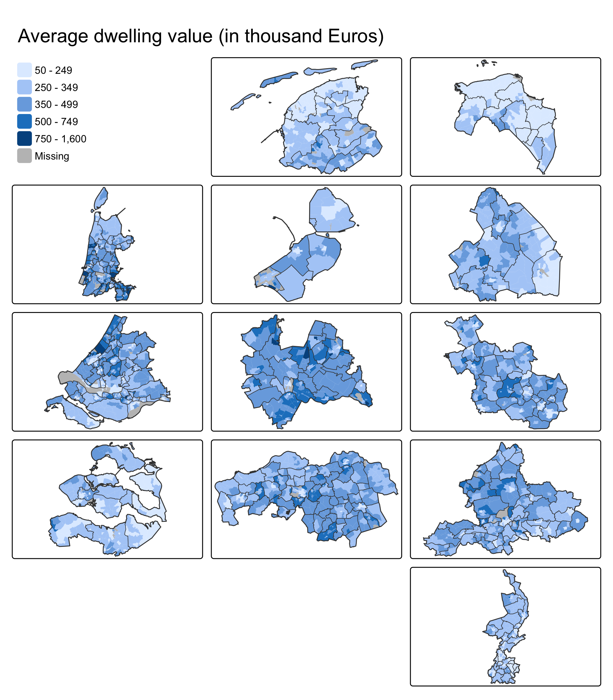
How does it work?
tm_facets_grid(rows = "row", columns = "col")creates one facet per combination ofrowandcol- Each facet is zoomed in on its own province
- Empty grid cells stay empty
- The same facet specification is needed for every group (
tm_shape) panel.show = FALSEremoves the panel labelstm_pos_on_top()places the legend on top of the facets
Computing grid layouts
The gridmap allocation problem
Beecham, Tennekes and Wood (2025) present gridmappr, which automates the creation of gridmap layouts:
- Input: a set of geographic points (e.g. centroids) and a grid of
n_row×n_colcells - Each point is allocated to exactly one cell; each cell holds at most one point
- so the grid needs at least as many cells as points
- The allocation minimises the total squared distance between geographic and grid positions
- Solved as a linear programming problem (an R implementation of Jo Wood’s Observable notebooks)
compactness(0-1): 0 → towards the edges, 0.5 → scaled geographic position, 1 → towards the centre of the gridspacers: reserved cells that cannot be used, e.g. for bodies of water
Beecham R, Tennekes M, Wood J (2025). gridmappr: An R package for creating small multiple gridmap layouts. Environment and Planning B: Urban Analytics and City Science, 53(3), 487–493. doi:10.1177/23998083251374737
Example: London boroughs
Real map vs. gridmap
lb_grid = make_grid(london_boroughs, n_row = 8, n_col = 8) |>
left_join(solution, by = c("row", "col")) |>
mutate(abbr = ifelse(is.na(area_name), "", substr(area_name, 1, 3)),
used = !is.na(area_name))
tm_lb_real = tm_shape(london_boroughs) +
tm_polygons(fill = "#F1DDD1", col = "white") +
tm_text("area_name", size = 0.5) +
tm_layout(frame = FALSE)
tm_lb_grid = tm_shape(lb_grid) +
tm_polygons(fill = "used",
fill.scale = tm_scale_categorical(values = c("grey97", "#F1DDD1")),
fill.legend = tm_legend_hide(), col = "white") +
tm_text("abbr", size = 0.7) +
tm_layout(frame = FALSE)
tmap_arrange(tm_lb_real, tm_lb_grid, ncol = 2)Real map vs. gridmap
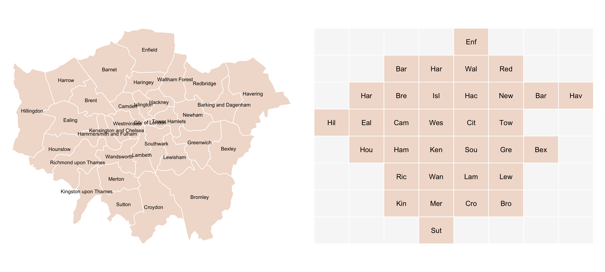
The effect of compactness
tm_compact = function(compactness) {
sol = points_to_grid(pts, n_row = 8, n_col = 8, compactness = compactness)
g = make_grid(london_boroughs, n_row = 8, n_col = 8) |>
left_join(sol, by = c("row", "col")) |>
mutate(abbr = ifelse(is.na(area_name), "", substr(area_name, 1, 3)),
used = !is.na(area_name))
tm_shape(g) +
tm_polygons(fill = "used",
fill.scale = tm_scale_categorical(values = c("grey97", "#F1DDD1")),
fill.legend = tm_legend_hide(), col = "white") +
tm_text("abbr", size = 0.6) +
tm_title(paste("compactness =", compactness)) +
tm_layout(frame = FALSE)
}
tmap_arrange(tm_compact(0), tm_compact(0.5), tm_compact(1), ncol = 3)The effect of compactness
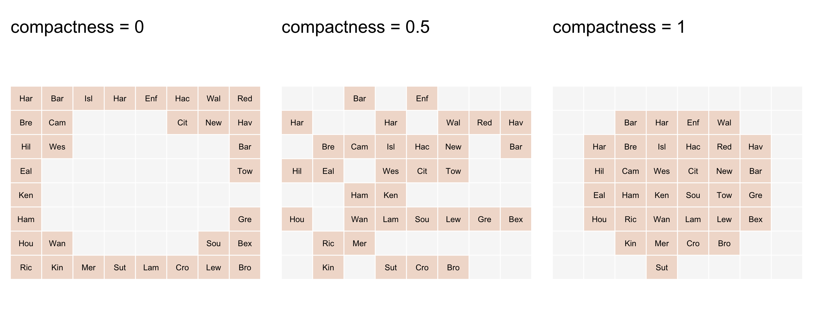
Spacers
With targeted spacers, the layout gets close to the well-known (manually designed) LondonSquared layout:
spacers = list(
c(1, 3), c(1, 5), c(1, 6),
c(2, 2), c(2, 7),
c(3, 1),
c(6, 1), c(6, 2), c(6, 7), c(6, 8),
c(7, 2), c(7, 3), c(7, 4), c(7, 6), c(7, 7)) # (row, col), origin bottom left
solution_sp = points_to_grid(pts, n_row = 7, n_col = 8, compactness = 1, spacers = spacers)
spacer_df = data.frame(row = sapply(spacers, `[`, 1), col = sapply(spacers, `[`, 2), spacer = TRUE)
lb_grid_sp = make_grid(london_boroughs, n_row = 7, n_col = 8) |>
left_join(solution_sp, by = c("row", "col")) |>
left_join(spacer_df, by = c("row", "col")) |>
mutate(type = case_when(!is.na(area_name) ~ "borough",
!is.na(spacer) ~ "spacer",
TRUE ~ "empty"),
abbr = ifelse(is.na(area_name), "", substr(area_name, 1, 3)))
tm_shape(lb_grid_sp) +
tm_polygons(fill = "type",
fill.scale = tm_scale_categorical(values = c(borough = "#F1DDD1", spacer = "grey75", empty = "grey97")),
fill.legend = tm_legend(""), col = "white") +
tm_text("abbr") +
tm_layout(frame = FALSE)Spacers
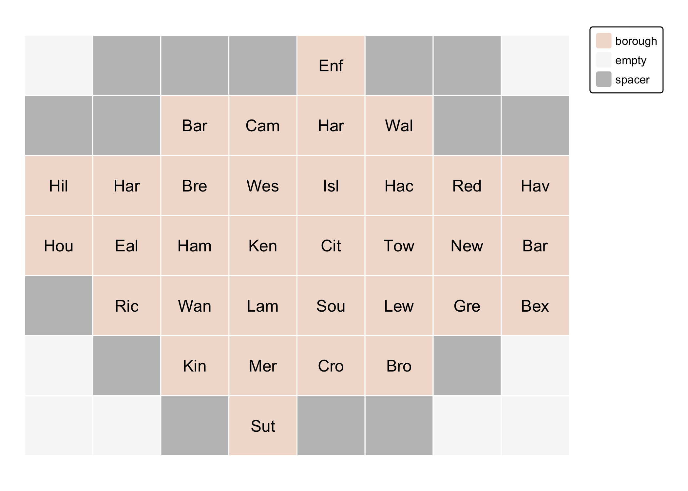
Displacement
How far does each borough move? Lines from the real centroid to the grid cell:
disp = lb_grid_sp |>
filter(type == "borough") |>
st_drop_geometry() |>
left_join(pts, by = "area_name", suffix = c("_grid", "_geo"))
disp_lines = st_sfc(lapply(seq_len(nrow(disp)), function(i) {
st_linestring(rbind(c(disp$x_geo[i], disp$y_geo[i]), c(disp$x_grid[i], disp$y_grid[i])))
}), crs = st_crs(london_boroughs))
tm_shape(london_boroughs) +
tm_polygons(fill = "#F1DDD1", col = "white") +
tm_shape(lb_grid_sp |> filter(type == "borough")) +
tm_borders(col = "grey50") +
tm_shape(st_sf(disp, geometry = disp_lines)) +
tm_lines(col = "#451C14", lwd = 1.5) +
tm_shape(st_as_sf(disp, coords = c("x_geo", "y_geo"), crs = st_crs(london_boroughs))) +
tm_dots(fill = "#451C14", size = 0.3) +
tm_layout(frame = FALSE)Displacement
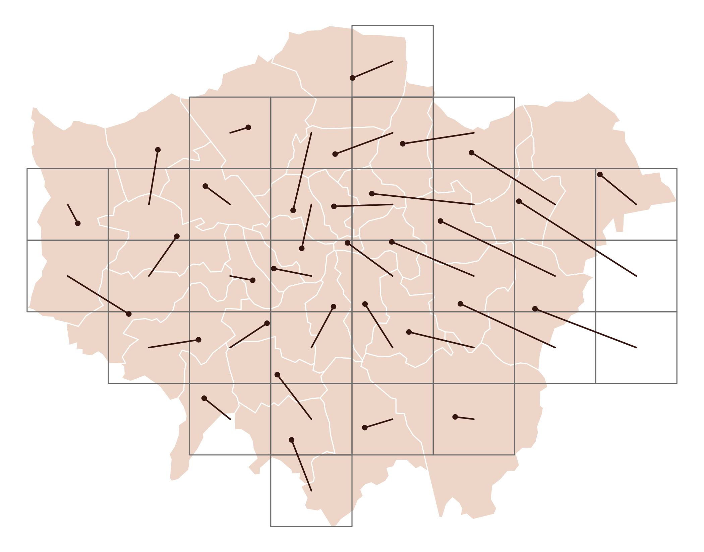
Tile grid maps
Zuid-Holland municipalities
The same method for the 52 municipalities of the province Zuid-Holland:
ZH_muni = NLD_muni[NLD_muni$province == "Zuid-Holland", ]
ZH_muni$income_middle = 100 - ZH_muni$income_high - ZH_muni$income_low
cent = st_coordinates(st_centroid(st_geometry(ZH_muni)))
pts_zh = tibble(name = ZH_muni$name, x = cent[, 1], y = cent[, 2])
solution_zh = points_to_grid(pts_zh, n_row = 8, n_col = 10, compactness = 0.6)From grid positions to polygons
make_grid() creates the grid cells as an sf object over the study area:
Both use a bottom-left origin for row and col.
Tile labels
Long names are broken into lines (at spaces and hyphens):
wrap = function(x, width) {
x = gsub("(?<!'s)-(?=\\S)", "-~ ", x, perl = TRUE) # allow breaks after hyphens
x = vapply(strwrap(x, width, simplify = FALSE), paste, "", collapse = "\n")
gsub("-~ ?", "-", x)
}
ZH_tiles$label = wrap(ZH_tiles$name, width = 10)
ZH_tiles$label2 = wrap(ZH_tiles$name, width = 14) # max. two lines
head(ZH_tiles$label[grepl("\n", ZH_tiles$label)])[1] "Goeree-\nOverflakkee" "Hoeksche\nWaard"
[3] "Hendrik-\nIdo-\nAmbacht" "Hardinxveld-\nGiessendam"
[5] "Capelle\naan den\nIJssel" "Krimpen\naan den\nIJssel"A tile grid map
brks = c(15, 20, 25, 30, 35, 40)
tm_shape(ZH_tiles) +
tm_polygons(
fill = "income_high",
fill.scale = tm_scale_intervals(breaks = brks, values = "brewer.purples"),
fill.legend = tm_legend("High income (%)"),
col = "white", lwd = 2) +
tm_text("label", size = 0.48,
col = "income_high", # white text on the two darkest classes
col.scale = tm_scale_intervals(breaks = brks,
values = c("black", "black", "black", "white", "white")),
col.legend = tm_legend_hide()) +
tm_layout(frame = FALSE)A tile grid map
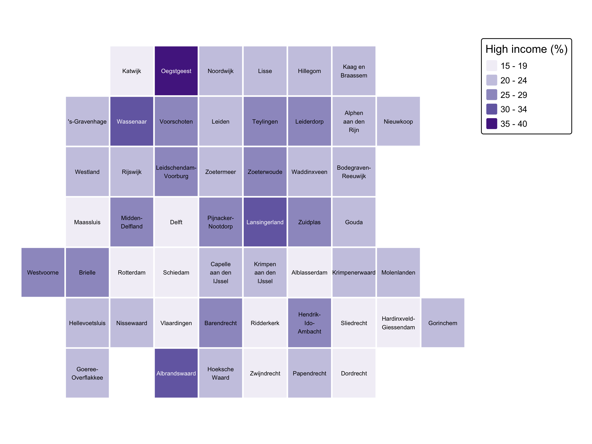
Geography as context
Show the real map next to (or as inset of) the grid map, so readers can relate the two:
tm_real = tm_shape(ZH_muni) +
tm_polygons("income_high",
fill.scale = tm_scale_intervals(breaks = brks, values = "brewer.purples"),
fill.legend = tm_legend_hide()) +
tm_layout(frame = FALSE)
tm_grid = tm_shape(ZH_tiles) +
tm_polygons("income_high",
fill.scale = tm_scale_intervals(breaks = brks, values = "brewer.purples"),
fill.legend = tm_legend("High income (%)"),
col = "white", lwd = 2) +
tm_text("label", size = 0.4,
col = "income_high",
col.scale = tm_scale_intervals(breaks = brks,
values = c("black", "black", "black", "white", "white")),
col.legend = tm_legend_hide()) +
tm_layout(frame = FALSE)
tmap_arrange(tm_real, tm_grid, ncol = 2)Geography as context
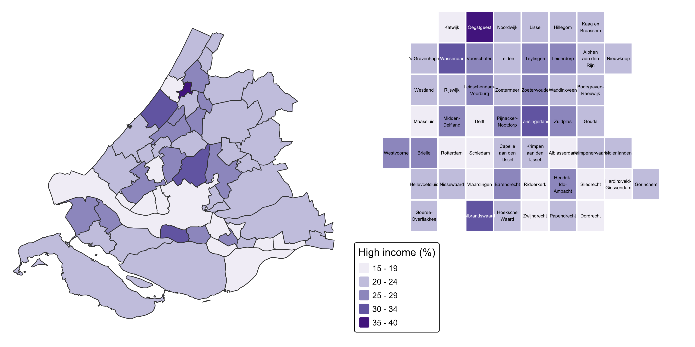
Glyphs on a grid map
No more overlap! One donut per tile, moved up a bit to make room for the labels:
library(tmap.glyphs)
h = diff(st_bbox(ZH_tiles[1, ])[c("ymin", "ymax")]) # tile height
ZH_donuts = ZH_tiles
st_geometry(ZH_donuts) = (st_centroid(st_geometry(ZH_tiles)) + c(0, 0.15 * h)) |>
st_set_crs(st_crs(ZH_tiles))
tm_shape(ZH_tiles) +
tm_polygons(fill = "grey95", col = "white", lwd = 2) +
tm_text("label2", size = 0.4, ymod = -2.6) +
tm_shape(ZH_donuts) +
tm_donuts(
parts = tm_vars(c("income_low", "income_middle", "income_high"), multivariate = TRUE),
fill.scale = tm_scale_categorical(values = "-pu_gn_div",
labels = c("Low", "Middle", "High")),
fill.legend = tm_legend("Income class"),
size = 0.55,
col = "grey30", lwd = 0.5) +
tm_layout(frame = FALSE)Glyphs on a grid map
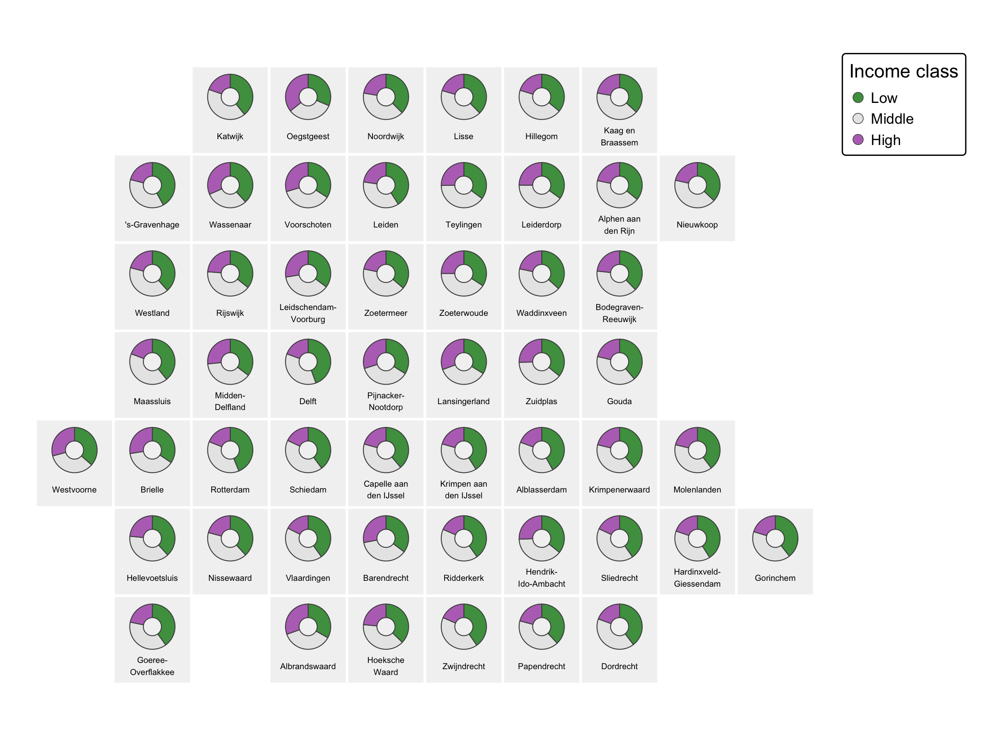
OD maps
Gridmaps of gridmaps
An OD map (Wood, Dykes & Slingsby, 2010) shows origin-destination flows as a gridmap within a gridmap:
- the outer grid: one cell per origin
- inside each cell: a small gridmap of all destinations, colored by the flow from that origin
Example from Beecham, Tennekes & Wood (2025): commuting between London boroughs, by occupation type (data from the gridmappr repository).
OD data
o_bor d_bor occ_type count
1 Barking and Dagenham Barking and Dagenham 1_managers_senior 798
2 Barking and Dagenham Barking and Dagenham 2_professional 1437
3 Barking and Dagenham Barking and Dagenham 3_associate_professional 967
is_prof
1 TRUE
2 TRUE
3 TRUEPreparing the OD map
The destination cells are the polygons; the origin cells define the facets:
lb_cells = lb_grid_sp |>
filter(type == "borough") |>
select(d_bor = area_name)
od_map = lb_cells |>
inner_join(od_lb, by = "d_bor") |>
left_join(solution_sp |> select(o_bor = area_name, o_row = row, o_col = col), by = "o_bor") |>
mutate(o_row = factor(o_row, levels = 7:1), # row 1 is at the bottom
o_col = factor(o_col, levels = 1:8),
focus = o_bor == d_bor)
nrow(od_map) # 33 x 33[1] 1089The OD map
tm_shape(od_map) +
tm_polygons(
fill = "share", col = NULL,
fill.scale = tm_scale_continuous_log10(values = "brewer.purples",
ticks = c(0.1, 1, 10, 50), labels = c("0.1", "1", "10", "50")),
fill.legend = tm_legend("Share of residents working in borough (%)",
orientation = "landscape", position = tm_pos_out("center", "bottom"))) +
tm_facets_grid(rows = "o_row", columns = "o_col") +
tm_shape(od_map |> filter(focus)) +
tm_borders(col = "black", lwd = 1.5) +
tm_facets_grid(rows = "o_row", columns = "o_col") +
tm_layout(panel.show = FALSE, frame = FALSE)The OD map
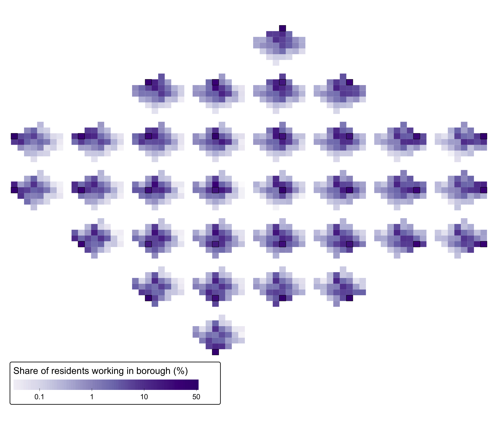
Reading the OD map
- Each small gridmap: where do residents of that borough (black outline) work?
- Most commuters work in their own borough or in central London (City, Westminster)
- Outer boroughs: commuting is concentrated in the own borough and its neighbours
- The same grid layout is used twice: for origins (facets) and destinations (cells)
Predefined grids as tiles
A tile grid map of Europe
Predefined grids can also be converted to polygons. A small helper:
grid_to_sf = function(grid) {
polys = lapply(seq_len(nrow(grid)), function(i) {
x = grid$col[i]; y = -grid$row[i] # geofacet: row 1 is on top
st_polygon(list(cbind(c(x, x + 1, x + 1, x, x), c(y, y, y + 1, y + 1, y))))
})
st_sf(grid, geometry = st_sfc(polys))
}
eu_grid = europe_countries_grid1
eu_grid$name[eu_grid$name == "Bosnia and Herzegovina"] = "Bosnia and Herz."
eu_grid$name[eu_grid$name == "Macedonia, the former Yugoslav Republic of"] = "North Macedonia"
eu_grid$name[eu_grid$name == "Moldova, Republic of"] = "Moldova"
eu_grid$name[eu_grid$name == "Russian Federation"] = "Russia"
eu_tiles = grid_to_sf(eu_grid) |>
left_join(st_drop_geometry(World), by = "name")
eu_tiles$iso_a3[eu_tiles$name == "Malta"] = "MLT" # not in WorldThe tiles have no CRS: this is a schematic map.
Europe: well-being
brks = seq(4, 8, by = 0.5)
tm_shape(eu_tiles) +
tm_polygons(
fill = "well_being",
fill.scale = tm_scale_intervals(breaks = brks, values = "brewer.yl_gn_bu"),
fill.legend = tm_legend("Well-being"),
col = "white", lwd = 3) +
tm_text("iso_a3", size = 0.8,
col = "well_being",
col.scale = tm_scale_intervals(breaks = brks,
values = c(rep("black", 5), rep("white", 3)),
value.na = "white"),
col.legend = tm_legend_hide()) +
tm_layout(frame = FALSE)The text color is data-driven too: the same variable and breaks as the fill, mapped to black (light tiles) or white (dark tiles).
Europe: well-being
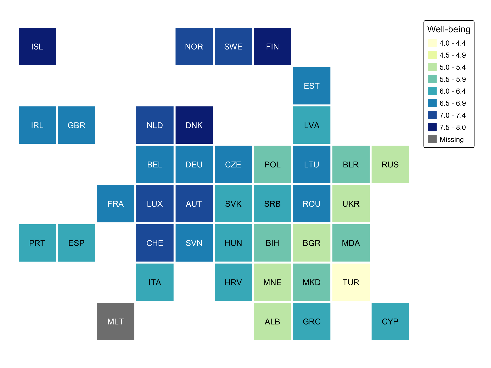
Europe: flower grid map
q = function(x) {
r = rank(x)
r[is.na(x)] = NA
r / max(r, na.rm = TRUE)
}
eu_tiles = eu_tiles |>
mutate(rank_gender = q(-gender), rank_press = q(press),
rank_footprint = q(-footprint), rank_well_being = q(well_being),
rank_inequality = q(-inequality))
tm_shape(eu_tiles) +
tm_polygons(fill = "grey95", col = "white", lwd = 3) +
tm_flowers(
parts = tm_vars(c("rank_gender", "rank_press", "rank_footprint",
"rank_well_being", "rank_inequality"), multivariate = TRUE),
fill.scale = tm_scale(values = "friendly5",
labels = c("Gender equality", "Press freedom", "Low footprint",
"Well being", "Economic equality")),
fill.legend = tm_legend(""),
size = 0.7) +
tm_text("iso_a3", size = 0.5, ymod = -3) +
tm_layout(frame = FALSE, inner.margins = 0.05)Europe: flower grid map
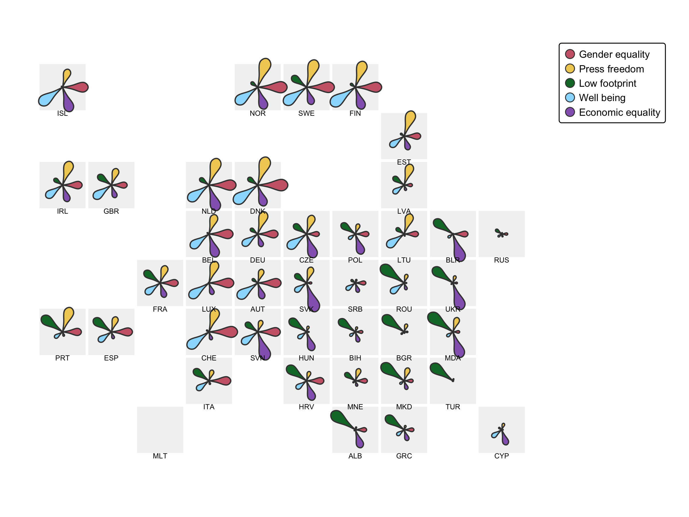
Design considerations
- Label the tiles (names, abbreviations or codes): shapes no longer identify regions
- Use a white (or background colored) gap between tiles
- Show a reference map for readers who are unfamiliar with the grid
- Squares vs. hexagons: squares are easier to align in rows and columns
- The allocation is a compromise: check that neighbours remain (roughly) neighbours
- Grid maps give each region equal weight — appropriate if each region counts equally (e.g. votes per country), less so if population matters (→ cartograms, session 8)
Recap
- Grid maps give all regions an equal size
- Grid of small maps:
geofacetgrid +tm_facets_grid(rows = "row", columns = "col") - Tile grid maps: grid cells as polygons (
gridmappr::make_grid()or your own helper), then regular tmap layers gridmappr::points_to_grid()computes an allocation for any set of regions (compactness,spacers)- Grid maps solve the overlap problem for glyphs
- OD maps: a gridmap of destinations for each origin, via
tm_facets_grid() - Further reading: grid maps vignette | facets | geofacet | gridmappr
- Beecham, Tennekes & Wood (2025). gridmappr: An R package for creating small multiple gridmap layouts. EPB: Urban Analytics and City Science. doi:10.1177/23998083251374737